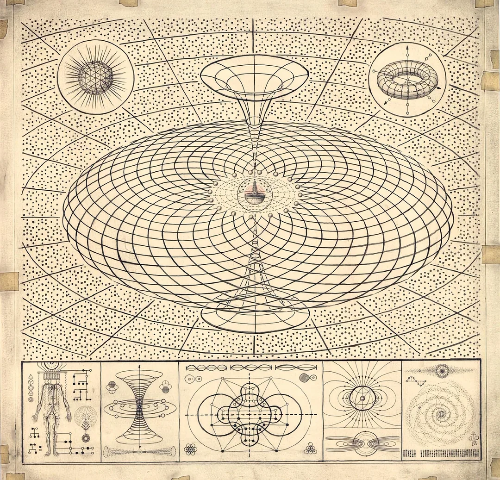
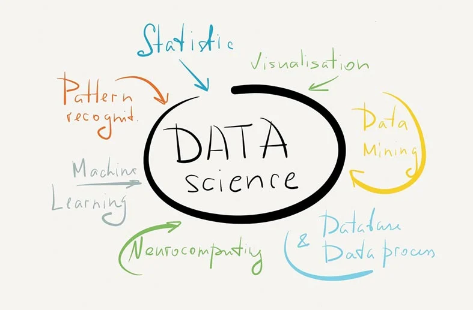

What I Do

Research & Particle Physics


- Applying Self-Supervised Learning (e.g., JEPA) for Foundation Models in High Energy Physics.
- Expertise in data analysis, simulation, and statistical modeling for particle jet phenomena at the LHC.
- Proficient in developing and evaluating deep learning architectures for physics research.

Web & Full Stack Development


- Skilled in building responsive UIs with React, HTML5, and CSS3 for interactive applications.
- Experienced in Node.js for backend development, API design, and real-time data handling (e.g., MQTT).
- Proficient with mapping libraries like OpenLayers for geospatial data visualization and analysis.
- Familiar with database integration (SQL/NoSQL) and containerization using Docker.

Systems Programming & Distributed Systems


- Proficient in C/C++ for low-level systems programming, including shell development and OS concepts.
- Strong understanding of networking protocols, concurrency control, and building distributed file systems.
- Comfortable working in Linux environments, with expertise in system calls and process management.

AI/ML Engineering & NLP


- Expertise in PyTorch, PyTorch Lightning, and experiment tracking with tools like Weights & Biases (W&B).
- Skilled in model optimization, performance profiling, and deploying ML models.
- Experience with Generative AI concepts, LLMs, and developing applications leveraging advanced language models.